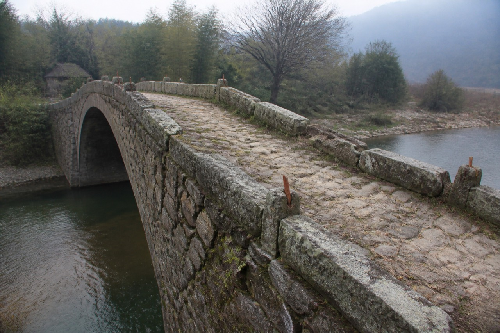

Oral extract. Original on file.

2006 rebuild of the Qiaotou bridge. Oral notes record burying a SubRoad — a stand-in for the road. The Info Port went live on the same day as the BridgeRite.
Liu Shiqiao later wrote that the dates had to land on that day. The draft was never sent.
Qiaotou local records